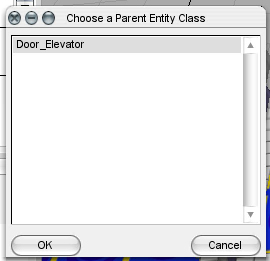
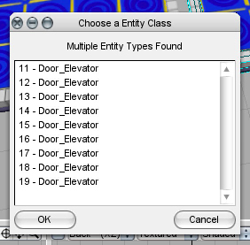

A much-needed fix that allows for simple creation of Door_Elevator Moving Platforms directly within Constructor, Platform Assist will save both time and frustration when creating interiors.
This tool automatically overrides the entity switcher, so creating a platform will invoke it automatically. You should notice that, when selecting "Door_Elevator" as the entity type, all the brushes will have the same entity id.
Additionally, it can be used to combine multiple brushes into a single entity by selecting the brushes and then using the tool manually. A window will appear with a list of entities that you can select. Picking one will make all the selected brushes use that entity.
You can download this tool at this link.
You can check out the source code for Platform Assist here.